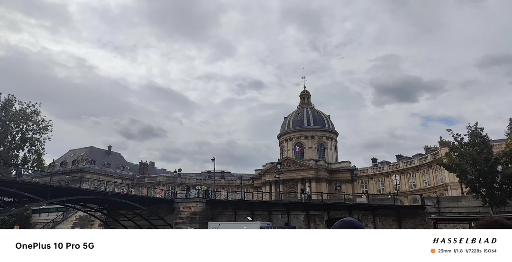
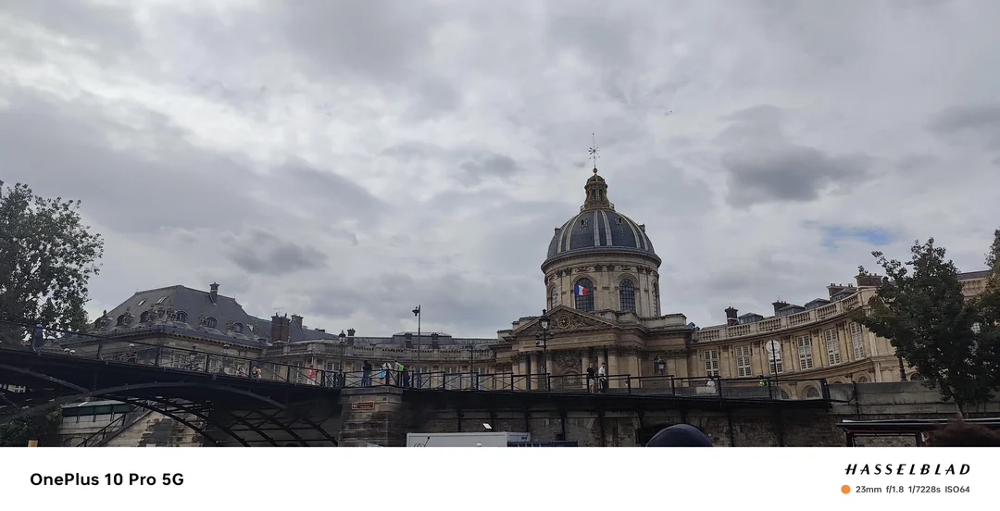

About Me
As a student studying B.Com (Hons) Accounting and Finance i have learnt how to operate Tally ERP,SAP,Auditing and other financial tools for creating and maintaining accounts. Apart from that i had the opportunity to gain hands-on experience in two internships related to Python with machine learning. In the first internship at Skill vertex, i had the chance to learn about and work on projects related to the California price prediction test and b. cancer prediction. In the second internship at Edureka, i expanded my knowledge further with exposure to Python with machine learning, deep learning, Keras, Pytorch, Tensor Flow, Tableau,(CNN-Convolutional neural networks) DSA,and data visualization.As this intership is still in progress.Apart that i have IBM certified Data scientist (Data science)Certificate provided through Coursera. My experience in both internships has equipped me with valuable skills in Python with machine learning, including proficiency in using frameworks such as Keras, Pytorch, and Tensor Flow. Additionally, my experience in data visualization tools which has given me the ability to effectively communicate data insights and findings through tools like Tableau. Beyond Python, i also possess a good understanding of R programming and also done many practical implementations,as well as i have worked upon C++, C#, and coreJava. These skills demonstrate my versatility and ability to adapt to different programming languages and environments. Overall, My education and internship experiences have provided me with a strong foundation in accounting and finance, as well as a diverse set of technical skills in programming and data analysis. These skills will be valuable to me as i continue to pursue my career in the field of accounting and finance and Fintech related fields that require data analysis and programming expertise. I have also completed a crash course on HTML, CSS, and JavaScript, i also possess the ability to create web pages from scratch. HTML provides the structure of a web page, CSS offers the design and styling elements, and JavaScript adds interactive functionality to web page. I have learned how to create HTML elements, format and style them with CSS, and add interactivity with JavaScript. In addition, i have become familiar with web development tools such as text editors and debugging tools to assist in creating web pages With this knowledge and skill set, I can create dynamic, functional and aesthetically pleasing web pages #Proficient in Using Kali Linux,Ubuntu Linux and Mac os X and have good understanding of Cybersecurity and I am a person who has a Blend of Business Acumen and Evolving Technology


 
